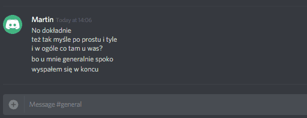
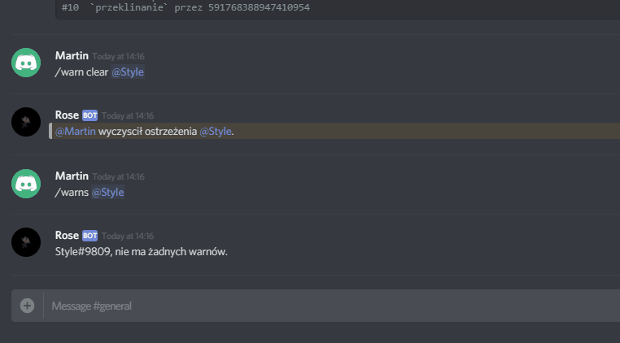

Rose docs
Rose v1.2

Właściciel bota: @Style#9809
Ostatnia aktualizacja: 23/06/2019
Rose <3 i używa:
- Discord.py
- discordBadoszApiWrapper
- asyncpg
- jishaku
- i wiele, wiele więcej, gdyż jest zrobiony z miłością dla ciebie 💖.
Wielkie podziękowania dla Any_key13, który pomógł mi ulepszyć i skorygować wszystkie błędy w tej dokumentacji! ❤️
Arguments
Każdy argument musi zaczynać się z
< i kończyć z >
.
@USER- oznaczanie nowego użytkownikaUSER- nazwa(nick) nowego użytkownikaGUILD- nazwa serweraGUILD_COUNT- liczba użytkowników serweraGUILD_COUNT+- liczba użytkowników serwera + 1 nowyGUILD_OWNER- właściciel serwera
Commands
[thing] <- To oznacza, że argument jest obowiązkowy.
{thing} <- To oznacza, że argument nie jest obowiązkowy.
(thing, thing) <- Dostępne opcje (zazwyczaj oddzielone przecinkiem). Tylko z nich można wybierać!
Settings
Komendy do ustawiania opcji.
-
setup - interaktywne ustawianie serwera.
-
set
- self_starring [(TRUE, FALSE)] - jesli jest to włączone to dana samemu sobie rekacja serduszka liczy sie jak dana przez kogoś, czyli zwiększy liczbe reakcji na heartboardzie (normalnie nie jest to możliwe, aby reakcja autora się liczyła).
- welcome_text [message] - tekst powitalny.
- welcomer_channel [channel] - kanał na który będą wysyłane powitania.
- blacklist - wiadomość posiadająca wyraz z blacklisty zostanie usunięta, a osoba która ją wysłała dostanie ostrzeżenie.
- add [word] - dodaje wyraz do blacklisty.
- remove [word] - usuwa wyraz z blacklisty.
- show - pokazuje wszystkie wyrazy z blacklisty.
- message [message] - Wiadomość wysyłana po napisaniu wyrazu z blacklisty.
- autorole [role] - ranga automatycznie przypisywana osobie po dołączeniu na serwer.
- stars_count [number] - liczba reakcji, po której wiadomość pokaże się na heartboardzie.
- warns_kick [number] - ilość ostrzeżeń po której osoba ma zostać wyrzucona, od niej zależy też ilość wysłanych wiadomości zanim osoba dostanie ostrzeżenie, gdy anti_raid jest włączony.
- invite_blocker [(TRUE, FALSE)]- blokuje wszystkie zaproszenia. 
- anti_raid [(TRUE, FALSE)] - po napisaniu @everyone, bądź tej samej wiadomości tyle razy ile jest ustawiony warns_kick osoba dostaje ostrzeżenie.
- anti_link [(TRUE, FALSE)] - blokuje wszystkie wysyłane linki.
- emoji_censor [(TRUE, FALSE)] - cenzuruje wiadomości emotkami.
- language [(eng, pl)]- ustaw język.
Aliasy:
TRUE:true, 1, enable
FALSE:false, 0, disable- welcomer_text [text]
- welcomer_channel [channel]
-
youtube - statystyki subskrybcji dla osób z kontami premium.
- add [channel] [channel_name] - dodaje statystyki subskrybcji do danego kanału.
- edit [channel] [channel_name] - zmienia kanał(z YouTube) do wyświetlania subskrybcji.
- remove [channel] - usuwa statystyki z kanału.
-
prefix [new_prefix] - ustawia nowy prefix.
-
settings - zwraca wszystkie ustawienia serwera.
Mod
Komendy moderacyjne.
-
kick [member] {reason} - wyrzuca osobe z serwera, po tym osoba może wejść na niego jeszcze raz, jeśli posiada zaproszenie.
-
ban [member] {reason} - banuje osobe z serwera, przy okazji usuwając jej wiadomości do 7 dniu.
-
mute [@member] {time} - wycisza osoba na dany czas, badź dopóki ktoś nie użyje na niej komendy
unmute. -
unmute [@member] - "odcisza" osobe, jeśli jest wyciszona.
-
clear [amount] - usuwa daną ilość wiadomości z kanału.
Reaction Role
- rr
- add [channel] [message_id] [role] [emoji] - aby zdobyć id wiadomości, kliknij 3 kropki po prawej
od niej i kliknij copy id, jeśli nie będzie tam nic takiego to musisz włączyć tryb developera w
zakładce
Appearance

- remove [channel] [message_id] [emoji] - usuwa reaction role z wiadomości.
- clear [channel] [message_id]
- add [channel] [message_id] [role] [emoji] - aby zdobyć id wiadomości, kliknij 3 kropki po prawej
od niej i kliknij copy id, jeśli nie będzie tam nic takiego to musisz włączyć tryb developera w
zakładce
Tags
-
tags (pokazuje tagi dostępne na serwerze)
-
tag
-
create/add [name] {- content} (- content jest opcjonalny, jeżeli go nie dodasz, możesz go dodać po tym, kiedy bot da instrukcje, jak to zrobić)
Przykład: tag add xxxxxxxxxxxxxx
Przykład 2: tag create xxxxxxxx - wszystko co sobie zamarzysz
-
edit [name] {- content} (- content jak w przypadku
addjest opcjonalny. Nie sądzę, że muszę wyjaśniać co to robi) -
remove [name] (tak, to usuwa tag, bezpowrotnie)
-
info [name] (robi to, co myślisz, że robi)
-
claim [name] (kiedy oryginalnego twórcy taga nie ma na serwerze, możesz zawłaszczyć tag za pomocą tej komendy)
-
global [guild_id] [name]
- info [guild_id] [name]
-
Emotes
Aby to działało musisz ustawić global_emojis na
True.
I wtedy wpisz ;;emote_name;;, aby
wysłać emotkę
Może być w środku zdania
- emotes
- emote
- add [name] [:emoji:] <- Musi być niestandardowa
- remove [nam]
- info [name]
- gimme [name]
stars
- cookieboard [#channel]
- r_cookieboard
- show id
Giveaway
- create [time] thing
Fun
Nie podam tutaj wszystkich komend z tzw. cog-a, fun. Jeśli chcesz zobaczyć je wszystkie użyj
komendy help
- hat hat_name
- who
- twitter text
- tb text Jest kilka argumentów do urozmaicenia textboxa
- fakie @user text - Proszę używajcie tego z mózgiem, nikt nie chce, żebyście wpadli w kłopoty
- ascii text
- yafud/irc Dokładnie ta sama rzecz, ale irc jest po angielsku a yafud po polsku
- cleverbot Tekst może być lekko zbugowany, gdyż jest tłumaczony przez google translatora
Cat
- raw
- play
- buy
- feed